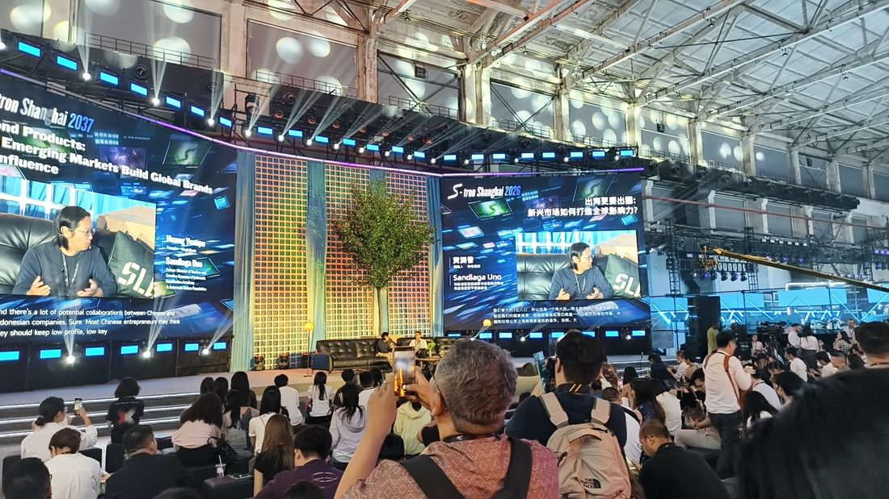
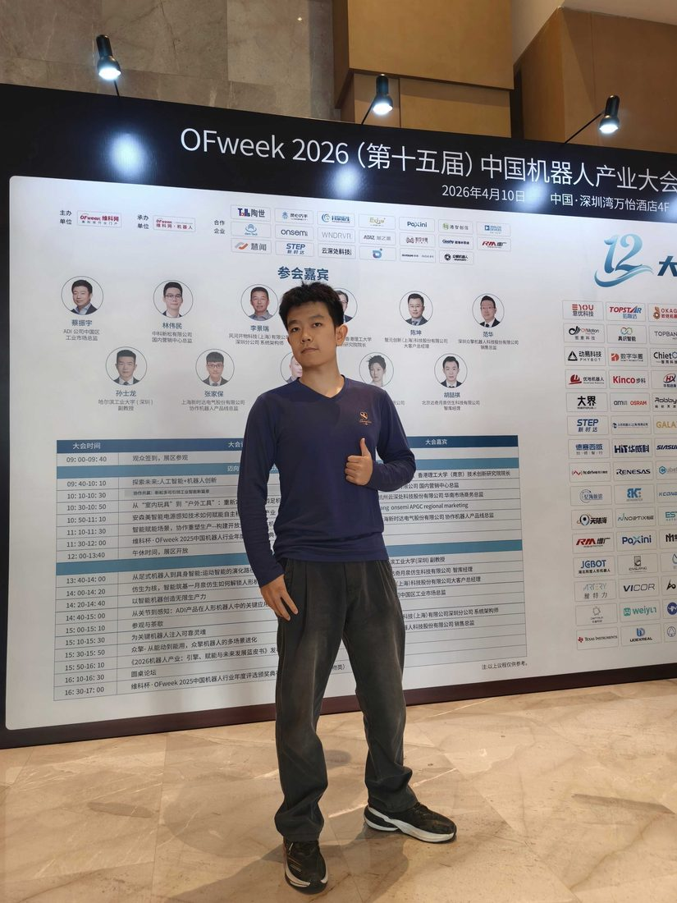
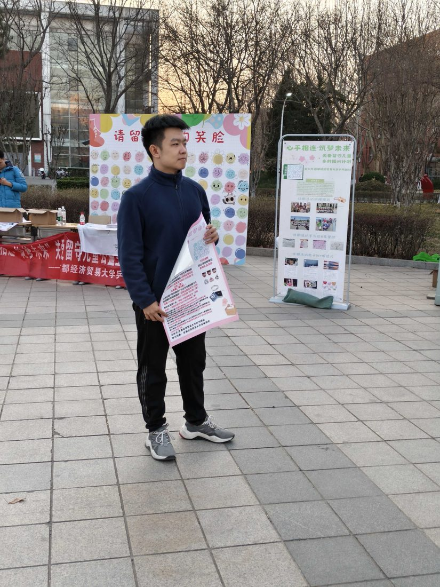
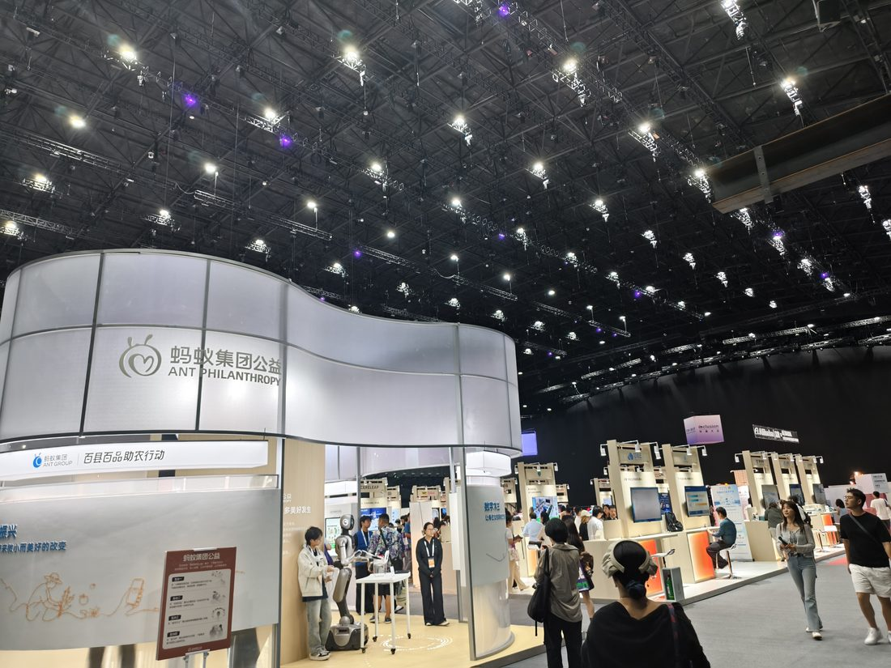
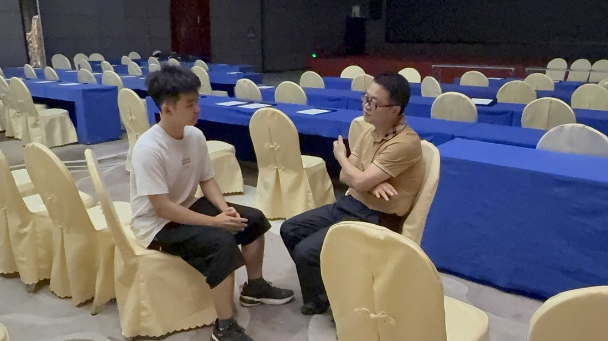
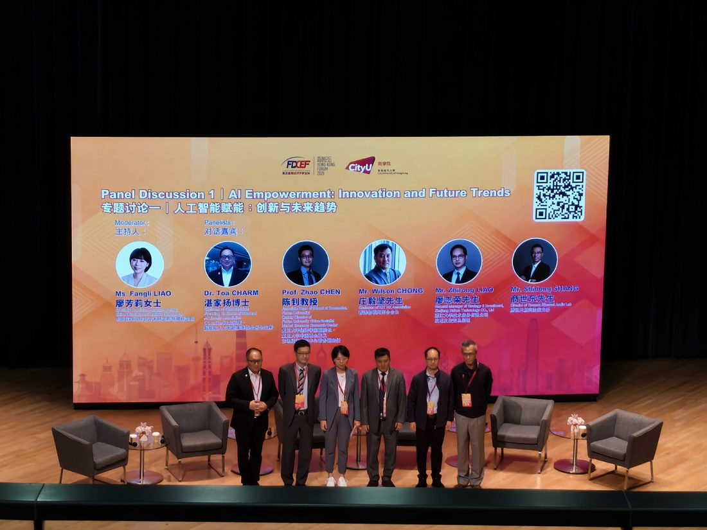
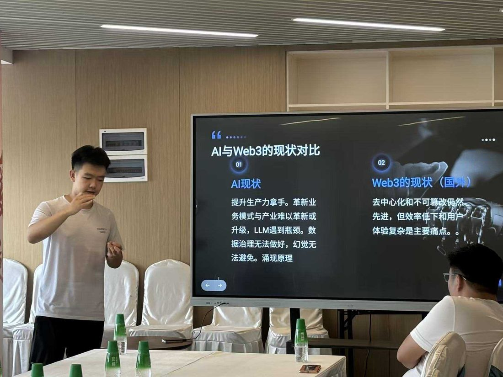

交叉背景
香港城市大学 × 复旦大学（经济学院）联合培养，金融 + IT 交叉学科；修读 LLM 导论、深度学习概论、面向企业的生成式人工智能等 AI 前沿课程。
你好，我是丁博文
香港城市大学 × 复旦大学 金融科技硕士 · 2027 届
专注方向：Agent 产品设计、LLM 评测与可观测性、RAG 与检索、金融 × AI 交叉背景
金融 + IT 交叉学科背景：香港城市大学 × 复旦大学金融科技联合培养硕士（2027 届），本科信息管理与信息系统。先后完成十段实习，覆盖 AI 行业研究、投资分析、IT 咨询审计与数据分析；独立打造 June AI 与 ai-video-eval 两款 AI 产品，对 Agent、模型评测、检索与可观测性形成体系化认知——习惯用数据与结构说话。
实习经历，覆盖 AI 行业研究 / 投资分析 / IT 审计 / 数据分析
独立打造的 AI 产品：June AI 与 ai-video-eval
师生线下参与的大型校园公益活动，由我发起并全程统筹
AIGC 视频评测体系，客观指标 + LLM-as-a-judge + 人机协同
目标岗位AI 产品经理（大模型应用 / Agent 方向） · AI 训练师 · AI 行业研究员
香港城市大学 × 复旦大学（经济学院）联合培养，金融 + IT 交叉学科；修读 LLM 导论、深度学习概论、面向企业的生成式人工智能等 AI 前沿课程。
LLM 为推理内核，Function Calling 结构化对接工具与数据，叠加记忆、规划与反思构成「感知-规划-执行-反思」闭环；codex / claude code 重度使用者，有应用与 skill 开发经验。
熟悉黑盒 / 白盒评测与 P、R、F1 等指标，习惯用 Langfuse 类工具做 trace 级 bad case 定位，用数据驱动 prompt 与检索策略迭代。
六块能力拼图：从 API 工程化到产品方法论，构成对 AI 产品的完整认知框架。
LLM 为推理内核，Function Calling 结构化对接工具与数据，叠加记忆、规划与反思构成「感知-规划-执行-反思」自主任务闭环。
理解黑盒评测（人工评估、LLM-as-a-judge、评测集回归）与白盒评测（logprobs、困惑度）的成本与适用场景，熟悉样本不均衡下的 P / R 取舍。
理清判别式模型（建模 P(y|x)）与生成式模型（建模联合分布、逐 token 生成，LLM 即典型范式）的差异与选型逻辑；理解两阶段检索的分工。
从元数据过滤、TF-IDF 词袋，到 Elasticsearch / BM25 稀疏检索、双塔向量检索 + ANN 召回，理解稀疏 + 稠密混合检索的权衡。
熟悉 Langfuse 类 LLM 可观测平台：全链路 trace、Prompt 版本管理与 A / B、评测集回归，能基于数据定位 bad case，驱动 prompt 与检索策略迭代。
重视决策质量（信息不完备下基于数据与优先级权衡、复盘校准）与数据敏感度（指标异动先归因再行动）；理解产研互信与跨部门 OKR 对齐，关注 Lovart 等 AI 原生产品的工作流设计。
节选 · 共十段
投资助理 / 孵化器品牌增长
投资助理
IT 咨询审计
行业研究员
目标岗位VC · PE · 金融科技
香港城市大学 × 复旦大学（经济学院）联合培养，金融 + IT 交叉学科；本科修读 CFA 证书班，对财报、投资、IPO / pre-IPO 等领域进行过系统学习。
十段实习覆盖一级市场投研、美股上市建议书、IT 咨询审计与大宗商品研究；对行研类工作尤其感兴趣，自学多个行研框架、研读多篇研报，形成自己的研究框架。
codex / claude code 等 Agent 工具重度使用者，有应用与 skill 开发经验；对 RAG 技术、Agent 跨对话记忆机制设计有深入了解，持续关注国内外 AI 创新对金融行业的赋能。
金融基础 × 研究方法 × 估值建模 × AI 工程化，构成一级市场研究的基本功。
本科修读 CFA 证书班，对金融领域进行系统学习，熟悉财报、投资、IPO、pre-IPO 等领域基础知识。
自学多个行研框架，研究阅读多篇研报；在氧化铝行业研究与美股上市建议书写作中反复打磨，形成自己的行研框架。
掌握 PB、PE 等相对估值与绝对估值方法，掌握基础 Excel 建模，在多家拟上市公司估值实践中落地。
对 Wind、Bloomberg 等金融终端的使用有了解，配合数据交叉验证支撑研究结论。
擅长 Agent 生态办公产出各类报告；对 RAG 技术、Agent 跨对话记忆机制设计有深入了解，用 AI 工具放大研究与写作效率。
深度飞书办公经验，擅长 Google 生态协作；多次代表公司与甲方高管直接对话，擅长演讲与观点表达。
节选 · 共十段
投资助理 / 孵化器品牌增长
投资助理
IT 咨询审计
行业研究员
目标岗位大模型评测 · 模型效果评估 · AI 产品评测
习惯把模糊的技术判断拆成可验证的结构化结论，并沉淀为报告与检查清单；可直接阅读英文论文与技术报告，希望参与评测执行、结果分析与跨团队沟通。
系统学习大模型评测方法论与主流 Benchmark 生态（MMLU、C-Eval、CMMLU、MT-Bench 等），理解 LLM-as-a-judge、人工评审校准、badcase 归因、数据污染等核心评测议题。
修读 SQL 基础、深度学习概论、面向企业的生成式人工智能、AI 项目质量管控等课程，理解从数据质量到模型效果验证的完整链路。
codex / Z-code 等 Agent 工具重度使用者，熟练开发应用与 skill；曾在智谱生态的资方与孵化器（星连资本、华清普智）实习，有用 AI 工具放大评测与研究效率的一线体感。
方法论 × Benchmark × 模型基础 × 测试工程，围绕「模型能力如何被可靠度量」展开。
理解 LLM-as-a-judge、人工评审校准、badcase 归因与数据污染识别等核心议题，知道每种方法的能力边界与适用场景。
系统学习 MMLU、C-Eval、CMMLU、MT-Bench 等主流基准；创办过 AI 主题社群，持续跟踪海内外新模型发布与评测榜单动态。
了解 Transformer 架构与大模型基本原理，理解模型能力边界与典型失效模式；遇到异常输出愿意追问到底，区分事实与推测。
熟悉 Agent、Tool Calling、RAG 等前沿方向的原理与评测要点，能针对应用形态设计对应的评测维度。
数据库测试岗完整实践：冒烟测试、多轮功能测试、测试反馈文档；主动学习 Python 自动化测试，实现部分场景的自动化回归。
独立开发 ai-video-eval（AIGC 视频评测工具）：客观指标本地计算 + 视觉大模型判断 + 人机协同工作台，评测方法论的一次完整产品化落地。
节选 · 共十段
数据库测试
IT 咨询审计
AI 投资助理
负责学生事务处创新创业主题活动组织开展的协助工作，以及科技创新协会章程撰写与协会架构落地。
与校外企业联合开办并独自组建团队，完整走通「获取信息 - 决策报名 - 到场签到 - 社交互动 - 离场反馈」用户路径，定位到场率卡点并针对性迭代，到场率提升约 30%；800 余名师生线下参与，为社团拉到 1000 余元赞助，活动获人民日报报道。
开展校内乒乓球联赛，负责干部任命、活动策划、物品采购与外联；所在学院蝉联院系杯团体前三，个人蝉联单打前二。
独自完成海报设计、活动方案与场地谈判，从零谈下 2 个场地方，成功举办 4 场创业分享会；与 2 位本地 KOL 达成流量合作，邀请多位初创公司嘉宾分享，保持与 AI 前沿资讯接轨。
持续奔赴各类 AI 一线现场——AI 生态大会、机器人论坛、人工智能经济论坛、Web3 沙龙，在现场攒认知、攒人脉、攒灵感；海外社区（TG / Discord）重度用户，交流圈不设边界。
AI 大会、论坛与沙龙的一线现场——攒认知，也攒人脉。







两款独立完成的 AI 项目：按 STAR 结构展开，痛点、方案与产出全部来自真实实践。
「悬浮窗 + 追问链」——把线性聊天变成树状的知识探索路径。
日常 AI 学习中，传统聊天窗口的对话是线性的——疑问很难在不丢失上下文的情况下深入追问。
「悬浮窗 + 追问链」设计：选中 AI 回复中的文字或截图，即可打开子对话线逐层追问，形成树状知识探索路径。
独立完成：痛点洞察与交互方案设计，一人闭环。
让「AI 视频好不好」不再只凭感觉——用体系化的评测维度说话。
AI 视频好不好不能只凭感觉——评测缺乏体系与工具支撑。
设计 10 个维度的评测体系：卡顿、闪烁等客观指标本地直接计算；内容理解维度交由视觉大模型判断（LLM-as-a-judge）；并配人机协同逐帧打分工作台。
单文件免安装、数据全程本地，开箱即用、隐私友好。
商务咨询系统（金融科技）理学硕士
信息管理与信息系统 理学学士
提出 5G 共享服务系统方案；用 kimi、GPT 辅助完成市场分析，调用百度地图 API 开发并部署与系统集成的导航界面。
主导的大型校园公益项目（800 余名师生线下参与）获人民日报报道。
如果你在做 AI 产品、金融科技或模型评测相关的工作，欢迎聊聊——邮箱是最快找到我的方式。
邮箱
期望 base：北京 / 上海 · 目标岗位：AI 产品经理（大模型应用 / Agent 方向）/ AI 训练师 / AI 行业研究员